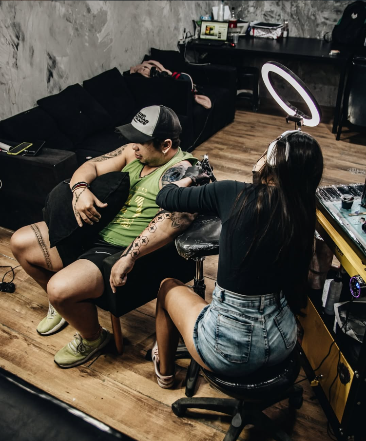
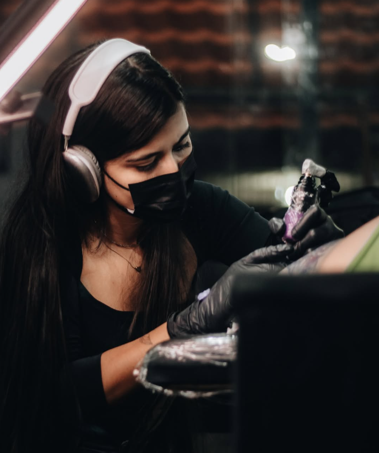

Especialista em Blackwork, Fineline e Realismo. Transformando suas ideias em obras de arte únicas e marcantes.

Oi, eu sou a Luise! Nesses 5 anos como tatuadora, aprendi que a experiência importa tanto quanto a arte final. Por isso, faço questão de que a sua sessão seja a mais confortável possível. Criei um ambiente que é um verdadeiro refúgio: acolhedor, totalmente seguro e com padrões de higiene rigorosos, pra você ficar em paz e aproveitar a experiência.
Cada traço é desenhado exclusivamente para você. Acreditamos que a tatuagem é uma forma de expressão pessoal, por isso, ouvimos sua história e a traduzimos em tinta.
Agende seu horário ou tire suas dúvidas através dos nossos canais de atendimento.
luuise.inkTattoo
Campo grande, Rio De Janeiro
© 2026 Todos os direitos reservados.